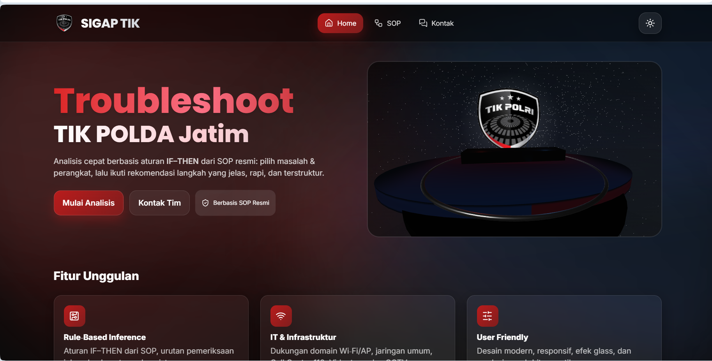

Troubleshoot BIDTIK
Sistem Pelaporan dan Penanganan Insiden Internal Kepolisian Daerah Jawa Timur untuk Peningkatan Layanan Infrastruktur TI yang Terdigitalisasi.

Selama magang di Bidang Teknologi Informasi dan Komunikasi (BID TIK) POLDA Jawa Timur, saya berkontribusi dalam membangun aplikasi **Troubleshoot BIDTIK**. Sistem ini memfasilitasi pelaporan tiket masalah teknis jaringan, server, dan komputer kerja kepolisian agar penanganan masalah terdokumentasi dan dapat diselesaikan dengan cepat.
Sebelum adanya aplikasi ini, pelaporan dilakukan secara lisan atau pesan chat tidak terstruktur. Dengan database SQLite terpusat, sistem ini memberikan dashboard bagi administrator dan tim teknis untuk melihat antrean keluhan, mengalokasikan staf lapangan, mengunggah dokumentasi perbaikan, serta memantau SLA (Service Level Agreement) penanganan insiden.
Aplikasi ini membantu meningkatkan transparansi kinerja IT support dan keandalan sistem komunikasi kepolisian.
- Dashboard Tiket Insiden: Antarmuka admin untuk melihat dan memfilter tiket berdasarkan kategori keparahan (Critical, High, Medium, Low).
- Delegasi Tugas Otomatis: Penugasan langsung keluhan kepada divisi terkait (Jaringan, Software, Hardware).
- Catatan Penyelesaian: Dokumentasi detail langkah penyelesaian masalah oleh teknisi sebagai basis data pengetahuan baru.
- Keamanan Akses Data: Pembatasan hak akses login berdasarkan tingkat otorisasi personil polda.
| Peran | Fullstack Developer Intern |
| Instansi | BID TIK POLDA JAWA TIMUR |
| Tahun | 2024 |
| Tech Stack |
Flask (Python)
SQLite
Bootstrap 5
HTML5 & CSS3
JavaScript
|